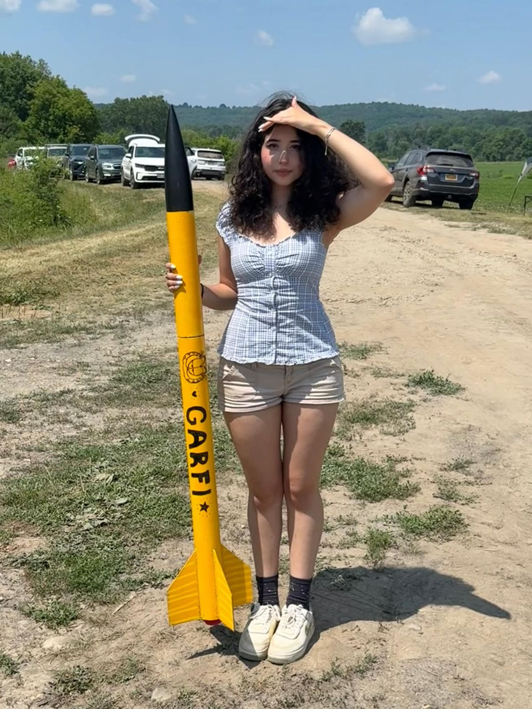
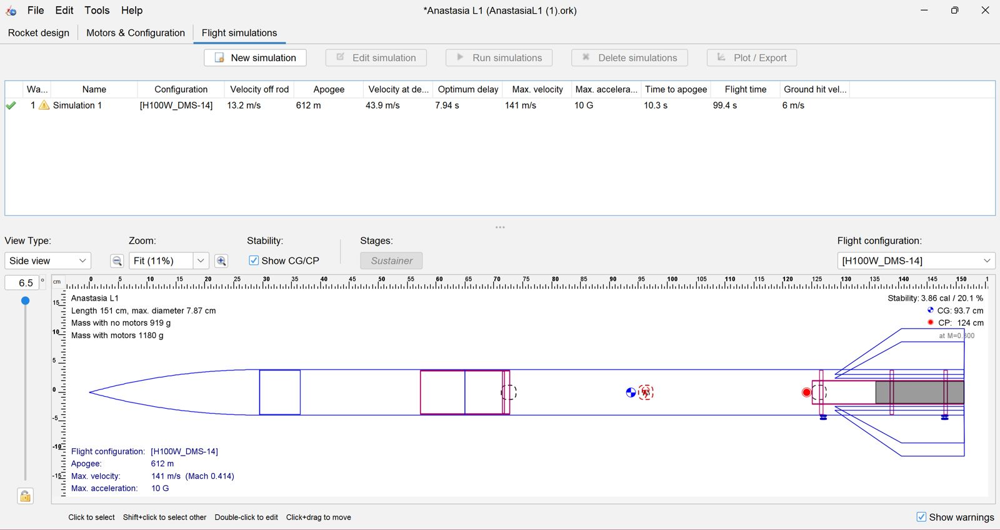
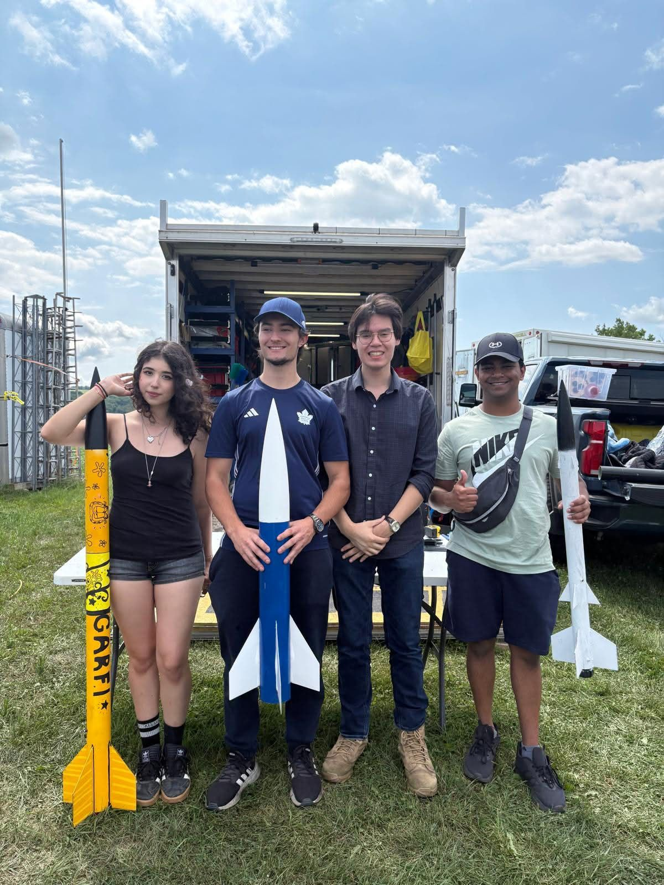

Level 1 High-Power Rocket
612 mapogee
Mach 0.41max velocity
3.86 calstability
- Designed my L1 certification rocket (151 cm long, H100 motor) in OpenRocket and checked its stability and recovery before flying it.
- Designed and assembled a rocket flight computer with sensors and flight data logging.
- Designed and 3D-printed rocket components in Fusion 360. I've flown three high-power rockets.

